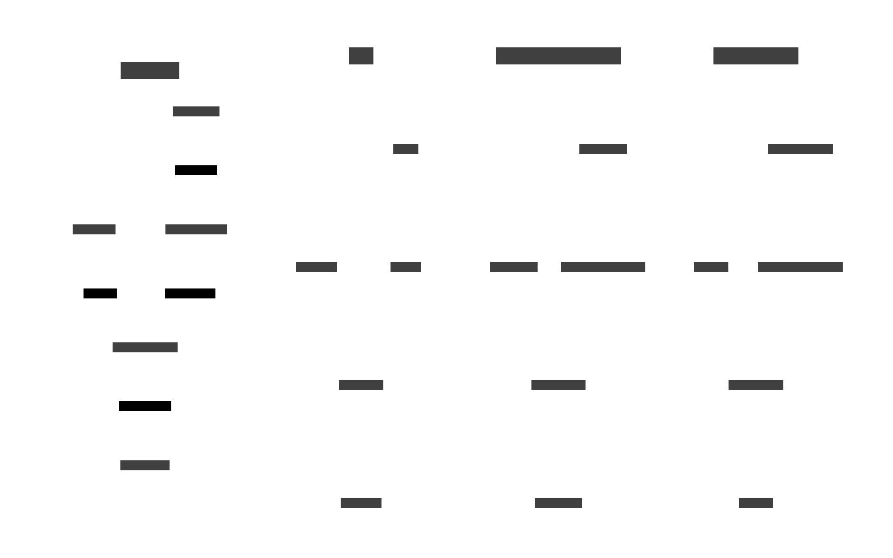
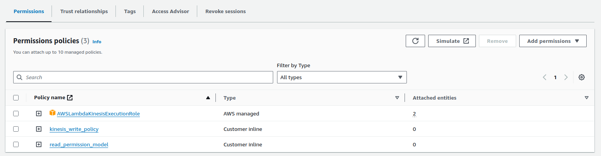
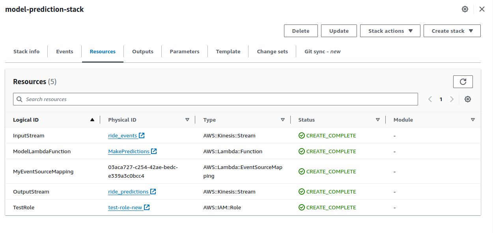

1.1 Introduction
This week during the #mlopszoomcamp course we looked at different ways of deploying ML models. I am most familiar with batch mode, where you just submit input to the model (running on my laptop, on a cluster, or in the cloud) and eventually you get the output (usually just written to disk). Another common pattern is a webservice, where there is a webserver running somewhere (usually in the cloud) and one uses REST API to send it inputs and then waits (blocks) for output (this being an online, synchronous mode of deployment).
The one I found most new is the streaming mode of deployment, which is an online, asynchronous mode of deployment. Here we have a producer publish data to a stream. This triggers a consumer (or perhaps many consumers) who are subscribed to this stream and will use the data. In this model, the producer does not care who and how consumes the data - there can be many different uses. This type of model is very useful when we expect a potentially never-ending stream of data with new data being variably or even sporadically available, and we want to react whenever new data is available.
An example application for a streaming deployment would be content moderation, where new content generated by users of some platform consitutes a continuous stream and whenever new content is added, it can be sent for automatic content moderation (e.g. copyright violations). Another example would be fraud detection in financial transactions: as new transaction data comes in, we’d like our system to process them and look for anomalies, so it can flag potentially fraudulent transactions early. For the rest of this post, we will focus on this deployment mode.
For our example, we will continue to use the NYC Taxi prediction model, even if it’s not a realistic use case like the above two examples. The model itself is less important than the infrastructure around it, so let’s just have a simple GBRT model from scikit-learn to predict the duration of a taxi ride in NYC based on the pickup and dropoff locations.
Let’s break down what we need:
- a stream for input, which will receive input data
- something to grab data from the input stream and turn it into the format we need
- a model that can, given a query of the right input data format, outputs some answer predictions
- something that puts predicted output of the model to another stream.
We also need make sure that we can run the model on cloud infrastructure. One way to ensure this is to containerize the model, e.g. using Docker. To ensure maximum flexibility, we will not store the actual model inside the image, but only the function that will get the input, invoke the model and push the result to the output stream. This way, if we wanted to replace the model with a better one at some later date, it’s easy to do. To do this, we store the model artifact from MLFlow also in the cloud, and will use an environment variable passed to the docker container to point to the right path.
The summary of our plan is shown in the leftmost panel of the figure below. We could implement this on AWS, GCP, or Azure with mostly the same infrastructure, as you can see in the other three panels - not much changes about our modules, only their respective branding. For the rest of this post, we will concentrate on AWS1.
For an in-depth step-by-step guide on how to do this using the AWS UI, check out the great video from the #mlopszoomcamp course. It’s a good primer to start with before trying it out with more programmatic tools, like the aws cli, or CloudFormation.

2 Implementation on AWS
Some/all services used in this section cost money. Always ensure you are aware of the associated costs.
We will use two different ways to deploy our model on AWS: first by using various aws cli commands to create our resources, and second by using AWS CloudFormation stacks to provision them.
2.1 AWS CLI
Let’s break down the steps to deploy our streaming model on AWS, closely following #mlopszoomcamp.
The basic steps would be (click on each step for details):
Before beginning, clone this repo. We will work inside the directory called streaming-deployment.
2.1.1 Prepare the model
First, ensure that:
- You have the latest version of
aws clitools installed (as of now, that is version 2), as described here. - You have logged in to your account, e.g. with
aws configure sso(recommended)
Before starting let’s define all the environment variables that we will use again and again. We use uuidgen to get a (more-or-less) unique name for our bucket.
uuid=$(uuidgen)
export BUCKET_NAME=nyc-taxi-example-${uuid}
export REGION=us-east-1
export ACCOUNT=YOURACCOUNTNUMBERHERE
export INPUT_STREAM="ride_events"
export OUTPUT_STREAM="ride_predictions"Let’s create the bucket 2:
aws s3api create-bucket --bucket ${BUCKET_NAME} --region ${REGION}You can check that everything worked by running aws s3 ls. You should see something like:
2024-06-12 17:27:43 nyc-taxi-example-c8655d49-a1ce-4fbd-86fc-974e5ac45bd2Navigate to model-training:
cd model-trainingNow launch the MLflow server with a setting to store all artifacts in this bucket (i.e., point the artifact store to your s3 bucket):
mlflow server --default-artifact-root s3://${BUCKET_NAME} --backend-store-uri sqlite:///mlflow.db --port 5012The MLFlow UI can now be seen on http://localhost:5012.
To train the model and store it, simply run (and as always running with --help will show the options if you need):
python train_model.py
This may take a couple of minutes to finish. In the MLFlow UI, examine the logged model and get the full path to the artifact and store it in a variable. It should look something like:
export LOGGED_MODEL="s3://${BUCKET_NAME}/1/e1c2fe7781aa4b3cb5577f9cbf1bd52c/artifacts/model"This concludes model preparation. Let’s switch to the model-deployment directory:
cd ../model_deployment2.1.2 Set up the streams
We need to create the input and output Kinesis streams. We don’t need a lot of throughput, so we only request 1 shard. These commands will create the streams in provisioned mode, which means that the bandwidth would not grow with demand:
aws kinesis create-stream --stream-name $INPUT_STREAM --shard-count 1aws kinesis create-stream --stream-name $OUTPUT_STREAM --shard-count 1and that is all that is needed.
2.1.3 Set up IAM roles and permissions
We need to create a role that will be able to read and write to our input and output streams. Lambda can then use that role during its execution. First make the role:
aws iam create-role --role-name test-role --assume-role-policy-document file://iam_docs/lambda_kinesis_trust.jsonNow, let’s allow Lambda to read from input streams and log things (we use a managed policy so we can simply attach it to the role).
aws iam attach-role-policy --role-name test-role --policy-arn arn:aws:iam::aws:policy/service-role/AWSLambdaKinesisExecutionRoleWe also need to allow Lambda to access our S3 bucket and to write to output stream. For this we define two inline policies. These can be created by running:
python fill_policy_templates.pyThis will create read_permission_model.json and kinesis_write_policy.json inside iam_docs. Inspect those and make sure they make sense.
Then add these inline policies to the role:
aws iam put-role-policy --role-name test-role --policy-name kinesis_write_policy --policy-document file://iam_docs/kinesis_write_policy.json
aws iam put-role-policy --role-name test-role --policy-name read_permission_model --policy-document file://iam_docs/read_permission_model.jsonVerify that all 3 permission policies are set. You should see something like:

2.1.4 Put everything together
The actual code for our Lambda is found here. It does the following:
- Extract the data from the input stream and decode it
- Prepare the features
- Use the model’s
predictmethod to predict the duration - Write the output to the output stream
We need to build the Docker image for this Lambda and push it ECR. The Dockerfile is here. As one can see, it is based on an AWS-provided image and basically just installs our python dependencies, copies the Lambda function code, and sets the entrypoint correctly.
To build the Docker image simply do:
cd docker
export LOCAL_IMAGE="stream-model-duration:v0.5"
docker build -t ${LOCAL_IMAGE} .
cd ../We now need to create the ECR repo, and tag the local model with our remote repo name:
export REPO_NAME="duration-model"
aws ecr create-repository --repository-name ${REPO_NAME}
export REMOTE_URI=${ACCOUNT}.dkr.ecr.${REGION}.amazonaws.com/${REPO_NAME}
export REMOTE_TAG="v0.5"
export REMOTE_IMAGE=${REMOTE_URI}:${REMOTE_TAG}
docker tag ${LOCAL_IMAGE} ${REMOTE_IMAGE}Before pushing things, let’s check that everything is working correctly, by running a local test. First launch the container and provide it with the needed env vars, as well as the aws credentials (so it can access the S3 bucket with the model3)
aws configure export-credentials --format env-no-export > .env.docker
sudo docker run -it --rm -p 8080:8080 -e LOGGED_MODEL=${LOGGED_MODEL} -e AWS_DEFAULT_REGION=${REGION} -e TEST_RUN="True" --env-file .env.docker stream-model-duration:v0.5Now in a separate terminal, do
python test_docker.pyYou should see
{
"predictions": [
{
"model": "ride_duration_prediction_model",
"version": "123",
"prediction": {
"ride_duration": 17.67777970218877,
"ride_id": 256
}
}
]
}Now we can log in and push the local image to ECR:
aws ecr get-login-password --region ${REGION} | docker login --username AWS --password-stdin ${ACCOUNT}.dkr.ecr.${REGION}.amazonaws.com
docker push ${REMOTE_IMAGE}The last step is creating the actual Lambda function that will use the image we just pushed to the ECR.
Create the Lambda function which points to our newly-minted image:
aws lambda create-function --function-name ride-prediction --role arn:aws:iam::${ACCOUNT}:role/test-role --code ImageUri=${ACCOUNT}.dkr.ecr.${REGION}.amazonaws.com/duration-model:v0.5 --package-type ImageOf course, on its own, the Lambda won’t know when to execute, so we have to add a trigger, which we set to be the input stream:
aws lambda create-event-source-mapping --function-name ride-prediction --event-source arn:aws:kinesis:${REGION}:${ACCOUNT}:stream/${INPUT_STREAM} --starting-position LATEST --batch-size 100I found that the default Lambda timeout of 3 seconds and 128 MB of RAM were not enough, so we need to edit the Lambda config to have a longer timeout and more memory:
aws lambda update-function-configuration --function-name ride-prediction --timeout 700 --memory-size 512We also need to give Lambda the environmental variable that points to the actual model in S3:
aws lambda update-function-configuration --function-name ride-prediction --environment Variables="{LOGGED_MODEL=s3://${BUCKET_NAME}/1/e1c2fe7781aa4b3cb5577f9cbf1bd52c/artifacts/model}"Now let’s put something into the input stream:
aws kinesis put-record --cli-binary-format raw-in-base64-out --stream-name ${INPUT_STREAM} --partition-key 999 --data '{
"ride": {
"PULocationID": 30,
"DOLocationID": 105,
"trip_distance": 1.66
},
"ride_id": 999
}'You should be able to see the data in AWS console. Go to “Kinesis->Streams->ride_events->Data viewer” select the only available shard id and for starting position use “Trim horizon”. Equivalently, from the command line, do
SHARD='shardId-000000000000'
SHARD_ITERATOR=$(aws kinesis \
get-shard-iterator \
--shard-id ${SHARD} \
--shard-iterator-type TRIM_HORIZON \
--stream-name ${INPUT_STREAM} \
--query 'ShardIterator' \
)
INPUT=$(aws kinesis get-records --shard-iterator $SHARD_ITERATOR)
echo ${INPUT} | jq -r '.Records[0].Data' | base64 --decode | jqYou should see:
{
"ride": {
"PULocationID": 30,
"DOLocationID": 105,
"trip_distance": 1.66
},
"ride_id": 999
}Finally, let’s make sure our Lambda returned a prediction. Again, you can either check the “ride_predictions” stream in the AWS console or run:
SHARD_ITERATOR=$(aws kinesis \
get-shard-iterator \
--shard-id ${SHARD} \
--shard-iterator-type TRIM_HORIZON \
--stream-name ${OUTPUT_STREAM} \
--query 'ShardIterator' \
)
OUTPUT=$(aws kinesis get-records --shard-iterator $SHARD_ITERATOR)
echo ${OUTPUT} | jq -r '.Records[0].Data' | base64 --decode | jqYou should see:
{
"model": "ride_duration_prediction_model",
"version": "123",
"prediction": {
"ride_duration": 10.830198691258552,
"ride_id": 999
}
}Once done with experimenting, don’t forget to clean up by deleting all the resources we created.
2.1.5 Using AWS CloudFormation
In this section we assume that we are starting almost from scratch. The only thing we will not repeat is pushing the Docker image to the ECR repo.
Before starting, change to the model-deployment-cf directory. First, set up env variables just like in the AWS cli case:
uuid=$(uuidgen)
export BUCKET_NAME=nyc-taxi-example-${uuid}
export REGION=us-east-1
export ACCOUNT=YOURACCOUNTNUMBERHERE
export INPUT_STREAM="ride_events"
export OUTPUT_STREAM="ride_predictions"Next, we will create the bucket using CloudFormation. For this we have prepared a very simple template, that only contains the S3 bucket and a single parameter for the name, which we override in the command line.
aws cloudformation deploy --template-file model_artifact_storage_stack.yaml --stack-name model-artifact-storage --parameter-overrides BucketNameParam=${BUCKET_NAME}You should see:
Waiting for changeset to be created..
Waiting for stack create/update to complete
Successfully created/updated stack - model-artifact-storageIf you do not want to repeat the model training, you can just copy the data in the appropriate bucket yourself.
Now, we repeat what we did before: deploy the MLFlow server, train the model so that it ends up in our bucket.
mlflow server --default-artifact-root s3://${BUCKET_NAME} --backend-store-uri sqlite:///mlflow.db --port 5012The MLFlow UI can now be seen on http://localhost:5012.
To train the model and store it, simply run (as always running with --help will show the options)
python train_model.py
Next we will deploy the rest of the resources, and we just need 1 command, unlike using raw AWS cli. For this, we have created a separate template, which:
- creates the necessary Lambda role
test-role-new - creates and attaches all the necessary policies to
test-role-new - creates input and output Kinesis streams
- creates the Lambda function, already with the correct timeout and memory set
- creates the trigger connecting the input stream to the Lambda
Note that since we are deploying a stack which creates a role, we must include the flag --capabilities CAPABILITY_NAMED_IAM in the command. Thus we have
aws cloudformation deploy --template-file model_prediction_stack.yaml --stack-name model-prediction-stack --parameter-overrides "BucketNameParam=${BUCKET_NAME}" "InputStreamParam=${INPUT_STREAM}" "OutputStreamParam=${OUTPUT_STREAM}" "RunID=65276264835a43a38e60613d60b47c32" --capabilities CAPABILITY_NAMED_IAMYou should see (if everything goes according to keikaku4):
Waiting for changeset to be created..
Waiting for stack create/update to complete
Successfully created/updated stack - model-prediction-stackOn the AWS Cloud Console you can see the resources deployed and it should look like:

You can also get the list in the terminal by running:
aws cloudformation list-stack-resources --stack-name model-prediction-stackWe should be set up now!
Let’s send some input data on the input stream to trigger the Lambda:
aws kinesis put-record --cli-binary-format raw-in-base64-out --stream-name ${INPUT_STREAM} --partition-key 999 --data '{
"ride": {
"PULocationID": 30,
"DOLocationID": 105,
"trip_distance": 1.66
},
"ride_id": 999
}'After a while, we can check the output stream:
SHARD='shardId-000000000000'
SHARD_ITERATOR=$(aws kinesis \
get-shard-iterator \
--shard-id ${SHARD} \
--shard-iterator-type TRIM_HORIZON \
--stream-name ${OUTPUT_STREAM} \
--query 'ShardIterator' \
)
OUTPUT=$(aws kinesis get-records --shard-iterator $SHARD_ITERATOR)
echo ${OUTPUT} | jq -r '.Records[0].Data' | base64 --decode | jqand you will see something like5:
{
"model": "ride_duration_prediction_model",
"version": "123",
"prediction": {
"ride_duration": 10.830198691258547,
"ride_id": 999
}
}Aside from a much shorter deployment, using CloudFormation stacks allows one to clean up much easier: simply deleting the stack will also remove all the resources that were defined in it6. One can easily delete a stack in the UI or run:
aws cloudformation delete-stack --stack-name model-prediction-stackTo empty the bucket, do:
aws s3 rm s3://${BUCKET_NAME} --recursiveYou should see a bunch of model files being deleted.
Now we can just do:
aws cloudformation delete-stack --stack-name model-artifact-storageFootnotes
We will assume and AWS account has already been set up appropriately.↩︎
We use
us-east-1but one can use any desired region. Note that the pricing might be different for different regions.↩︎Don’t forget to stop the container and clean up the env file when you are done with the test.↩︎
Translator’s note: “keikaku” means plan↩︎
Note that the
ride_durationdiffers from the answer we got in the AWS cli section in the last 2 digits. This is consistent with roundoff error.↩︎Not quite: removing non-empty buckets is not supported so one will have to delete bucket contant first.↩︎